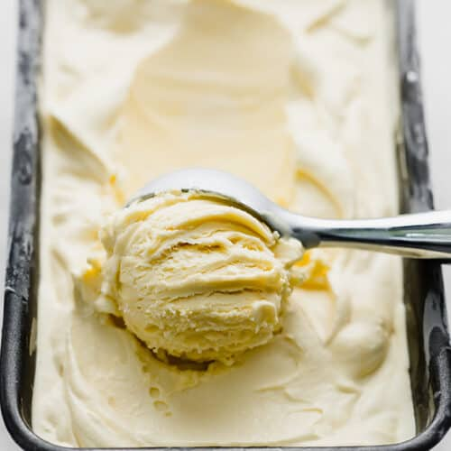

Home
Ice Cream Recipe

Description
Vanilla is frequently used to flavor ice cream, especially in North America,
Asia, and Europe. Vanilla ice cream, like other flavors of ice cream, was originally
created by cooling a mixture made of cream, sugar, and vanilla above a container
of ice and salt.
Vanilla ice cream is the most common and basic flavour of ice cream which is favourite
amongst all. Vanilla ice cream is made by blending in vanilla essence in along with the
eggs (optional), cream, milk and sugar. The vanilla essence added gives the ice cream a
very natural aroma and vanilla flavour.
Ingredients
- ¾ cup white sugar
- 1 cup heavy whipping cream
- 2 ¼ cups milk
- 2 teaspoons vanilla extract
Steps
- Stir sugar, cream, and milk into a saucepan over low heat until sugar has dissolved.
Heat just until mix is hot and a small ring of foam appears around the edge.
- Transfer cream mixture to a pourable container such as a large measuring cup. Stir
in vanilla extract and chill mix thoroughly, at least 2 hours. (Overnight is best.)
- Pour cold ice cream mix into an ice cream maker, turn on the machine, and churn according
to manufacturer's directions, 20 to 25 minutes.
-
When ice cream is softly frozen, serve immediately or place a piece of plastic wrap
directly on the ice cream and place in freezer to ripen, 2 to 3 hours.